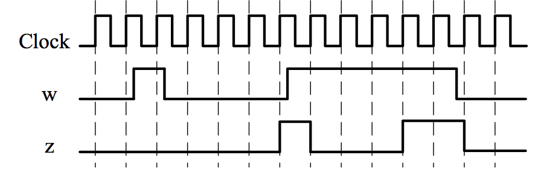
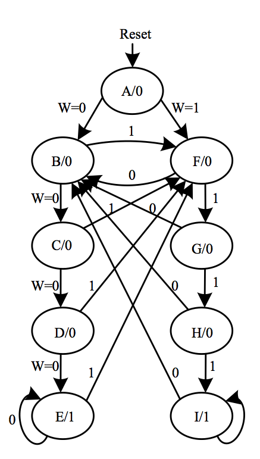
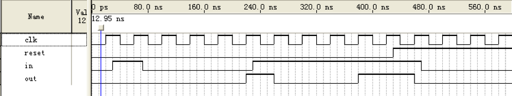
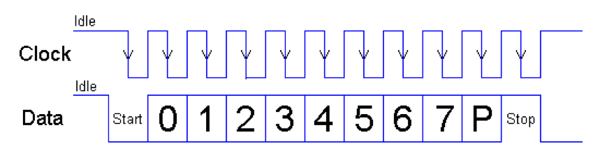
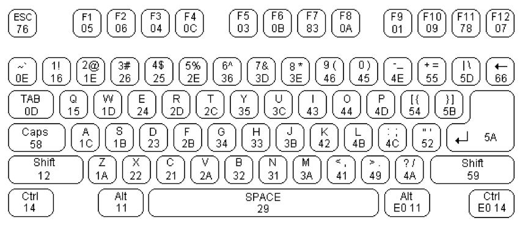
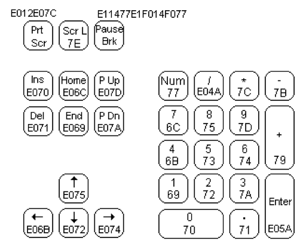
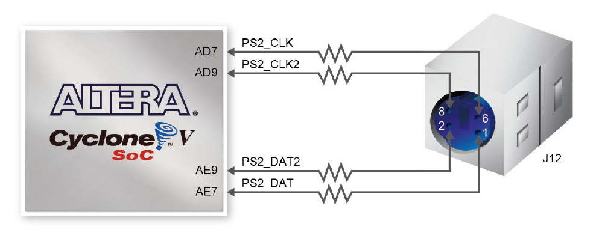
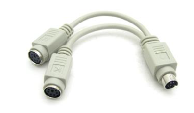
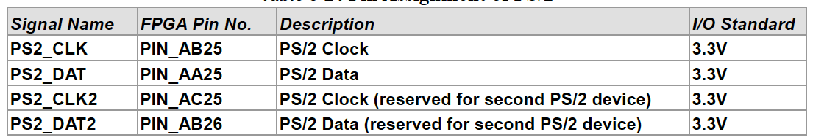
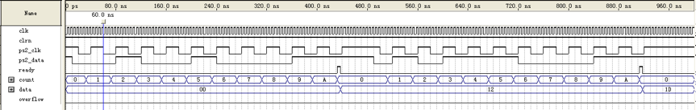

Lab 7: Finite State Machines and Keyboard Input
We know the state of the system if we know the sequence of symbols on the tape, which of these are observed by the computer (possibly with a special order), and the state of mind of the computer.
—“On Computable Numbers, with an Application to the Entscheidungsproblem”, A. M. Turing
A Finite State Machine (FSM) is a computational model that transitions between a finite number of states and performs actions. A finite state machine consists of a starting state, an input list (containing all possible input signal sequences), a state transition function, and an output port. During operation, the state transition function determines the next state and output based on the current state and input signal. State machines typically start from the initial state and use the state transition function to determine the next state based on the input signal.
A Finite State Machine (FSM) is a crucial circuit module in digital circuit systems. It is a sequential logic circuit whose output depends on both past and current inputs, combining elements of both combinational logic and sequential logic circuits. The combinational logic is divided into two parts: one is the next-state logic used to generate the next state of the finite state machine, and the other is the output logic used to generate the output signal. The function of the next-state logic is to determine the next state of the finite state machine, and the function of the output logic is to determine the output of the finite state machine. In addition to inputs and outputs, the state machine also has a set of registers with a “memory” function. The function of these registers is to remember the internal state of the finite state machine, and they are often referred to as state registers.
The purpose of this lab is to learn how state machines work, understand how they are coded, and design a simple state machine using PS/2 keyboard input.
State Machines
Finate State Machines
In practical applications, Finate State Machines are divided into two types: Moore Finate State Machines and Mealy Finate State Machines. The output signal of a Moore Finate State Machine is only related to the current state of the Finate State Machine and is not related to the current value of the input signal. The current value of the input signal only affects the next state of the state machine and does not affect the current output of the state machine. That is, the output signal of a Moore Finate State Machine is directly decoded from the state register. After the clock CLK signal is valid, the Moore-type Finate State Machine undergoes a period of delay before the output reaches a stable value. Even if the input signal changes during this clock cycle, the output will remain stable and unchanged during this complete clock cycle. The effect of the input on the output will not be reflected until the next clock cycle. The most important feature of a Moore finite state machine is that it separates the input and output signals. Unlike a Moore finite state machine, the output of a Mealy state machine is not only related to the current state of the state machine, but also to the current value of the input signal. The output of a Mealy finite state machine is directly affected by the current value of the input signal, and the input signal may change at any time during a clock cycle, which causes the Mealy finite state machine to respond to the input in the current clock cycle, one cycle earlier than the Moore finite state machine responds to the input signal. Therefore, noise in the input signal may affect the output signal.
Simple state machine
This section introduces the working process and design methods of state machines by designing an actual state machine.
Design a Finate State Machine (FSM) that distinguishes between two specific timings: The FSM has one input w and one output z. When w is four consecutive 0s or four consecutive 1s, the output z = 1, otherwise z = 0. Timing overlap is allowed. That is, if w is five consecutive 1s, then after the fourth and fifth clocks, z is 1. Figure fig-state01 is the timing diagram of this finite state machine.

Fig. 52 FSM timing diagram
The state diagram of this state machine is shown in Figure fig-state02.

Fig. 53 FSM state diagram
Use Verilog code to implement the state machine shown in Figure fig-state02. This state machine has nine states and requires at least four state registers to store these state values in binary code, as shown in Table tab-state01.
State |
y3 |
y2 |
y1 |
y0 |
|---|---|---|---|---|
A |
0 |
0 |
0 |
0 |
B |
0 |
0 |
0 |
1 |
C |
0 |
0 |
1 |
0 |
D |
0 |
0 |
1 |
1 |
E |
0 |
1 |
0 |
0 |
F |
0 |
1 |
0 |
1 |
G |
0 |
1 |
1 |
0 |
H |
0 |
1 |
1 |
1 |
I |
1 |
0 |
0 |
0 |
Create a Verilog file using SW0 as the FSM low-level synchronous reset port, SW1 as input w, KEY0 as manual clock input, LEDR0 as output z, and LEDR4-LEDR7 to display the states of the four flip-flops, and complete the specific design of the state machine.
module FSM_bin
(
input clk, in, reset,
output reg out
);
parameter[3:0] S0 = 0, S1 = 1, S2 = 2, S3 = 3,
S4 = 4, S5 = 5, S6 = 6, S7 = 7, S8 = 8;
wire [3:0] state_din, state_dout;
wire state_wen;
SimReg#(4,0) state(clk, reset, state_din, state_dout, state_wen);
assign state_wen = 1;
MuxKeyWithDefault#(9, 4, 1) outMux(.out(out), .key(state_dout), .default_out(0), .lut({
S0, 1'b0,
S1, 1'b0,
S2, 1'b0,
S3, 1'b0,
S4, 1'b1,
S5, 1'b0,
S6, 1'b0,
S7, 1'b0,
S8, 1'b1
}));
MuxKeyWithDefault#(9, 4, 4) stateMux(.out(state_din), .key(state_dout), .default_out(S0), .lut({
S0, in ? S5 : S1,
S1, in ? S5 : S2,
S2, in ? S5 : S3,
S3, in ? S5 : S4,
S4, in ? S5 : S4,
S5, in ? S6 : S1,
S6, in ? S7 : S1,
S7, in ? S8 : S1,
S8, in ? S8 : S1
}));
endmodule
Compile the project, write test code, and simulate this state machine.
Figure fig-statesim01 shows the functional simulation results of this state machine.

Fig. 54 Simulation diagram of FSM
Please constrain the pins of the circuit yourself, download it to the development board, and verify its functionality.
The above is an example of a Moore Finate State Machine design. Please refer to the relevant materials and study how it differs from the design of a Mealy Finate State Machine.
Encoding methods for state machines
The state register of the state machine in the previous example uses sequential binary encoding, which encodes the states of the state machine as sequential binary numbers. Sequential binary encoding minimizes the number of bits in the state vector. In this example, only 4-bit binary numbers are needed for encoding. This saves logical resources required to store the state vector. However, when outputting, the state vector must be decoded to generate the output (each state has a specific output, so the state must be decoded during output to ensure that the specific value is output when the state number is met). This decoding process often requires a significant amount of combinational logic gates.
In addition, when the chip is exposed to radiation or other interference, it may cause abnormal state machine jumps, or even jump to an invalid state and cause a crash. For example, if the state machine abnormally jumps to a certain state, and this state requires waiting for input and responding, the state machine will enter a deadlock state because the state operation is abnormal and no input will appear.
One-hot encoding is also a commonly used encoding method in state machine design. In one-hot encoding, for any given state, only one bit in the state vector is set to 1, while all other bits are set to 0. Since there are n states, an n-bit state vector is required, making one-hot encoding the longest encoding. One-hot encoding makes it very convenient to determine the state. If a bit is set to 1, it represents a specific state; if it is 0, it does not represent that state. Therefore, determining the state output is very simple, requiring only one or two simple AND gates or OR gates.
The state transition speed of a one-hot encoded state machine from one state to another is very fast, while sequential binary encoding requires multiple transitions to move from one state to another, and the speed decreases sharply as the number of states increases.
When the chip is disrupted, one-hot encoding generally only jumps to an invalid state (if it jumps to another valid state, the current 1 must become 0, while another bit changes from 0 to 1, which is highly unlikely). Therefore, the state machine stability of one-hot encoding is high.
Gray code is also a commonly used encoding method in state machine design. Its advantage is that when a state transition occurs in a Gray code state machine, only one bit of the state vector changes.
Generally speaking, sequential binary encoding and Gray code state machines use the fewest flip-flops and more combinational logic, making them suitable for CPLD chips that provide more combinational logic. For FPGAs with more flip-flop resources, implementing state machines using one-hot encoding is more efficient. Therefore, CPLDs typically use Gray code, while FPGAs typically use one-hot encoding. For FPGA devices with abundant flip-flop resources, using one-hot encoding is common practice.
In Table tab-state02, the state machine has nine states, which can be implemented using nine flip-flops. These nine state flip-flops are denoted by y8, y7, y6, y5, y4, y3, y2, y1, and y0. The one-hot encoding of this state machine is shown in Table tab-state02.
State |
y8 |
y7 |
y6 |
y5 |
y4 |
y3 |
y2 |
y1 |
y0 |
|---|---|---|---|---|---|---|---|---|---|
A |
0 |
0 |
0 |
0 |
0 |
0 |
0 |
0 |
1 |
B |
0 |
0 |
0 |
0 |
0 |
0 |
0 |
1 |
0 |
C |
0 |
0 |
0 |
0 |
0 |
0 |
1 |
0 |
0 |
D |
0 |
0 |
0 |
0 |
0 |
1 |
0 |
0 |
0 |
E |
0 |
0 |
0 |
0 |
1 |
0 |
0 |
0 |
0 |
F |
0 |
0 |
0 |
1 |
0 |
0 |
0 |
0 |
0 |
G |
0 |
0 |
1 |
0 |
0 |
0 |
0 |
0 |
0 |
H |
0 |
1 |
0 |
0 |
0 |
0 |
0 |
0 |
0 |
I |
1 |
0 |
0 |
0 |
0 |
0 |
0 |
0 |
0 |
PS/2 interface controller and keyboard input
PS/2 is a standard for personal computer serial I/O interfaces, named after its first use in IBM PS/2 (Personal System/2) machines. PS/2 interfaces can connect PS/2 keyboards and PS/2 mice. A serial interface refers to a type of interface where information is sent one bit at a time in sequence over a single signal line.
PS/2 interface timing
The PS/2 interface uses two signal lines: one for the clock signal PS2_CLK and the other for data transmission PS2_DAT. The clock signal primarily indicates when the bits on the data line are valid. Data can be transmitted bidirectionally between the keyboard and the host, but this discussion focuses solely on data transmission from the keyboard to the host. When both the PS2_DAT and PS2_CLK signal lines are high (idle), the keyboard can send signals to the host. If the host sets the PS2_CLK signal low, the keyboard will be ready to accept commands from the host. In our lab, the host does not need to send commands, but only needs to use these two signal lines as inputs.
When a user presses or releases a key, the keyboard serially transmits data to the host in an 11-bit-per-frame format, while simultaneously transmitting the corresponding clock signal (typically 10.0-16.7 kHz) on the PS2_CLK clock signal. The first bit is the start bit (logic 0), followed by 8 data bits (low-order bit first), one parity bit (odd parity), and one stop bit (logic 1). Each bit is valid on the falling edge of the clock. Figure fig-ps01 shows the timing of the keyboard transmitting a single byte of data. The primary reason for using the falling edge is that it occurs exactly at the midpoint of the data bit, allowing sufficient signal settling time for the data bit to transition from its initial state to the reception sampling point.

Fig. 55 Keyboard output timing diagram
The information sent by the keyboard via the PS2_DAT pin is called scan code. Each scan code can consist of a single data frame or multiple consecutive data frames. The scan code sent when a key is pressed is called the make code, and the scan code sent when a key is released is called the break code. Taking the W key as an example, the Make Code for the W key is 1Dh. If the W key is pressed, the PS2_DAT pin will output a data frame, with the 8-bit data field set to 1Dh. If the W key remains pressed, the scan code will continuously output 1Dh 1Dh … 1Dh, until another key is pressed or the W key is released. The break code for a key is F0h plus the key’s make code. For example, when the W key is released, the break code output is F0h 1Dh, transmitted in two frames.
When multiple keys are pressed simultaneously, the scan codes are output sequentially. For example, if you first press the left Shift key (scan code 12h), then press the W key, release the W key, and then release the left Shift key, the complete sequence of scan codes sent during this process is: 12h 1Dh F0h 1Dh F0h 12h.
Keyboard scan code
Each key has a unique make code and break code. The set of scan codes for all keys on the keyboard is called the scan code set. There are three standard scan code sets, and all modern keyboards use the second scan code set by default. Figure fig-ps02 shows the scan codes (in hexadecimal) for each key on the keyboard. For example, the scan code for the Caps key is 58h.
As shown in Figure fig-ps02, the scan codes of the keys on the keyboard are arranged randomly. If you want to quickly convert the keyboard scan codes to ASCII codes, the simplest method is to use a LookUp Table (LUT). Readers are encouraged to generate their own conversion tables from scan codes to ASCII codes.

Fig. 56 Keyboard scan code
Figure fig-ps03 shows the scan codes for the extended keyboard and numeric keypad.

Fig. 57 Scan codes for extended keyboard and numeric keypad
Connection between PS/2 interface and FPGA
Figure fig-ps05 shows the PS/2 interface on the DE10-Standard development board. This interface can be used to connect two devices via a Y-shaped adapter, as shown in Figure fig-ps06.
When only one device is connected, the signal is connected to PS2_DAT and PS2_CLK.

Fig. 58 PS/2 connection

Fig. 59 Y-shaped adapter
Figure fig-ps07 shows the pin list for the PS/2 interface on the DE10-Standard.

Fig. 60 PS/2 Pins on DE10-Standard Development Board
PS/2 Keyboard Controller Design
The following is the Verilog HDL code for receiving keyboard data. This code is only responsible for receiving data sent from the keyboard. Identifying which key has been pressed is handled by other modules. How to display this data or key symbols is left to the reader to design.
module ps2_keyboard(clk,clrn,ps2_clk,ps2_data,data,
ready,nextdata_n,overflow);
input clk,clrn,ps2_clk,ps2_data;
input nextdata_n;
output [7:0] data;
output reg ready;
output reg overflow; // fifo overflow
// internal signal, for test
reg [9:0] buffer; // ps2_data bits
reg [7:0] fifo[7:0]; // data fifo
reg [2:0] w_ptr,r_ptr; // fifo write and read pointers
reg [3:0] count; // count ps2_data bits
// detect falling edge of ps2_clk
reg [2:0] ps2_clk_sync;
always @(posedge clk) begin
ps2_clk_sync <= {ps2_clk_sync[1:0],ps2_clk};
end
wire sampling = ps2_clk_sync[2] & ~ps2_clk_sync[1];
always @(posedge clk) begin
if (clrn == 0) begin // reset
count <= 0; w_ptr <= 0; r_ptr <= 0; overflow <= 0; ready<= 0;
end
else begin
if ( ready ) begin // read to output next data
if(nextdata_n == 1'b0) //read next data
begin
r_ptr <= r_ptr + 3'b1;
if(w_ptr==(r_ptr+1'b1)) //empty
ready <= 1'b0;
end
end
if (sampling) begin
if (count == 4'd10) begin
if ((buffer[0] == 0) && // start bit
(ps2_data) && // stop bit
(^buffer[9:1])) begin // odd parity
fifo[w_ptr] <= buffer[8:1]; // kbd scan code
w_ptr <= w_ptr+3'b1;
ready <= 1'b1;
overflow <= overflow | (r_ptr == (w_ptr + 3'b1));
end
count <= 0; // for next
end else begin
buffer[count] <= ps2_data; // store ps2_data
count <= count + 3'b1;
end
end
end
end
assign data = fifo[r_ptr]; //always set output data
endmodule
The code first records the historical information of the PS2 clock signal through ps2_clk_sync and detects the falling edge of the clock. When a falling edge is detected, sampling is set to 1. Then, data is received bit by bit and placed in the buffer FIFO queue. After collecting 11 bits, the buffer is transferred to the data queue FIFO.
The keyboard controller module has set up an 8-byte FIFO queue to prevent keyboard data from being sent too quickly, causing the processing module to be unable to retrieve the data in time and resulting in data loss. Such FIFO queues are common in digital systems and are primarily used to transfer data between modules with different processing speeds. The upstream module is responsible for adding data to the queue, while the downstream module is responsible for retrieving the data for processing. The buffering function of the FIFO queue allows data to be temporarily stored when the downstream processing module cannot process the data in time. FIFO is a first-in, first-out queue equipped with write and read pointers. When the queue is not empty, a ready signal is sent to indicate that there is data to be processed at this time. When the queue overflows, an overflow signal is sent. When the key processing system calls this module, it needs to read the keyboard data when the keyboard controller ready signal is 1, and after confirming that the reading is complete, set nextdata_n to zero one cycle. At this point, the keyboard controller module receives the confirmation signal that reading is complete, moves the read pointer forward, and prepares to provide the next data. Readers are advised to consider the timing coordination between the processing module and this module to avoid missed keys or duplicate reads. Of course, the timing for interaction between the two modules can also be designed independently.
Figure fig-ps08 shows the simulated waveform of this code, displaying the scan codes 12h and 1Dh received from the left Shift key and W key. Note that, taking the receiving of 12h as an example, the data transmission order for the PS/2 interface is: start bit (1’b0) + eight data bits (from low to high) + parity bit + stop bit (1’b1). Therefore, when transmitting 12h, the data sequence sent from the PS2_DAT pin should be 0010 0100 011.

Fig. 61 Keyboard simulation waveform
FPGA Debugging Guide
This experiment involves connecting an FPGA to a keyboard. Compared to switches, LEDs, and other devices, the interface logic for keyboards is much more complex. In addition, since a state machine is required to process input data, multiple modules are inevitably needed. Once the project becomes complex, choosing the right debugging tool becomes very important. If you use a development board for step-by-step debugging, it will be a time-consuming and laborious task, because generating a bitstream file is a relatively lengthy process. In such cases, we generally choose to perform simulation first to verify that the code logic is correct.
In previous experiments, the input devices were generally buttons and switches, which were easy to simulate using input arrays. In this experiment, you will need to write your own simulation model to simulate the keyboard interface timing described above.
`timescale 1ns / 1ps
module ps2_keyboard_model(
output reg ps2_clk,
output reg ps2_data
);
parameter [31:0] kbd_clk_period = 60;
initial ps2_clk = 1'b1;
task kbd_sendcode;
input [7:0] code; // key to be sent
integer i;
reg[10:0] send_buffer;
begin
send_buffer[0] = 1'b0; // start bit
send_buffer[8:1] = code; // code
send_buffer[9] = ~(^code); // odd parity bit
send_buffer[10] = 1'b1; // stop bit
i = 0;
while( i < 11) begin
// set kbd_data
ps2_data = send_buffer[i];
#(kbd_clk_period/2) ps2_clk = 1'b0;
#(kbd_clk_period/2) ps2_clk = 1'b1;
i = i + 1;
end
end
endtask
endmodule
`timescale 1ns / 1ps
module keyboard_sim;
/* parameter */
parameter [31:0] clock_period = 10;
/* ps2_keyboard interface signals */
reg clk,clrn;
wire [7:0] data;
wire ready,overflow;
wire kbd_clk, kbd_data;
reg nextdata_n;
ps2_keyboard_model model(
.ps2_clk(kbd_clk),
.ps2_data(kbd_data)
);
ps2_keyboard inst(
.clk(clk),
.clrn(clrn),
.ps2_clk(kbd_clk),
.ps2_data(kbd_data),
.data(data),
.ready(ready),
.nextdata_n(nextdata_n),
.overflow(overflow)
);
initial begin /* clock driver */
clk = 0;
forever
#(clock_period/2) clk = ~clk;
end
initial begin
clrn = 1'b0; #20;
clrn = 1'b1; #20;
model.kbd_sendcode(8'h1C); // press 'A'
#20 nextdata_n =1'b0; #20 nextdata_n =1'b1;//read data
model.kbd_sendcode(8'hF0); // break code
#20 nextdata_n =1'b0; #20 nextdata_n =1'b1; //read data
model.kbd_sendcode(8'h1C); // release 'A'
#20 nextdata_n =1'b0; #20 nextdata_n =1'b1; //read data
model.kbd_sendcode(8'h1B); // press 'S'
#20 model.kbd_sendcode(8'h1B); // keep pressing 'S'
#20 model.kbd_sendcode(8'h1B); // keep pressing 'S'
model.kbd_sendcode(8'hF0); // break code
model.kbd_sendcode(8'h1B); // release 'S'
#20;
$stop;
end
endmodule
Table list-ps03 shows that we created the ps2_keyboard_model module, which outputs two interface signals corresponding to the keyboard. The module mainly consists of the kbd_sendcode task.
In Verilog, structures similar to C language functions include tasks and functions, which can improve code readability and reusability. Functions are used to describe combinational logic and can only have one return value. The internal structure of a function cannot contain timing control. Tasks are similar to procedures and execute a segment of Verilog code. A task can have any number of inputs and outputs and can also contain timing control.
The kbd_sendcode task is used to control the keyboard interface to send a keyboard code, make code, or break code. You only need to enter the 8-bit code, and the task will add the start bit, odd parity bit, and stop bit internally. Note: kbd_clk_period is set to 60ns. The actual keyboard clock is not that fast, but this is done here to speed up the simulation.
In keyboard_sim, ps2_keyboard_model and ps2_keyboard are instantiated and connected. In the initial section, model.kbd_sendcode can be directly called to send a specific scan code. Please modify this part of the code to simulate the keyboard key sequence required for the experiment. The simulation code uses a direct setting method to read signals, and you can also control the reading signals according to your own implementation of the upper layer module.
When conducting actual physical keyboard tests, it is recommended to first route important signals such as ready, sampling, or overflow from the keyboard control module to the top-level module for LED display, ensuring basic keyboard communication functionality.
If testing the accuracy of key codes is required, each received key code can be displayed using two seven-segment displays. The six seven-segment displays on the development board can display three-digit key codes. By shifting the previously received key codes to the left each time, you can view the three most recently received key codes in the history.
In this scenario, conduct thorough and repeated testing to ensure there are no missing key codes or duplicate key codes. For example, when pressing and releasing the A key once, the seven-segment display should show 1C F0 1C.
Lab check-in contents
On-Board Lab: Displaying the ASCII code for a single key
The lower two digits of the seven-segment display show the key code of the currently pressed key, while the middle two digits show the corresponding ASCII code (the conversion can be implemented by designing a custom ROM and initializing it). Only character and numeric key input needs to be implemented; combination keys and the numeric keypad are not required.
When the key is released, the lower four digits of the seven-segment display turn off completely.
The upper two digits of the seven-segment display show the total number of times the key has been pressed. Holding the key down counts as a single press. Only sequential presses and releases are considered; simultaneous presses of multiple keys are not considered.
Advanced optional content
Supports Shift, CTRL, and other combination keys, displaying on the LED whether the combination keys are pressed
Supports simultaneous pressing of the Shift key and letter/number keys without conflict
Supports input of uppercase characters, displaying the corresponding ASCII code
Online test
PS/2 keyboard simulation
Online test
Bitstream encryption